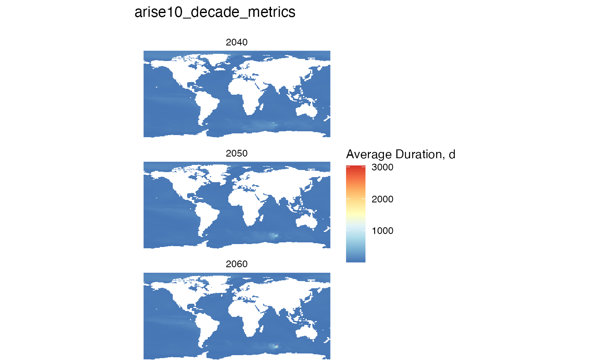

Using the MHW-CI database to plot
using_mhw_database.RmdThis shows some basic commands to connect to the MHW-CI database, summarize data and plot.
If you are developing this package, editing scripts or adding
packages, then run this in the console prior to this script:
devtools::load_all()
This package requires a database file that stores all the data. You have to create a database ‘connection’ first
You can type the filename in a variable
# read from the environment
db_file <- "db/mhwci_v3.db"or you can set the path to the database file in an
.Renviron file like this
MHWDBFILE=/Users/billspat/Code/SpaCELab/marine_heatwave_work/mhwci/db/mhwci_v3.db
Note that MHWDBFILE must be the full path to the database file. If
you do set it in the .Renviron file, then you can use this
function:
# read from the environment
db_file <- mhwci::get_dbfile()
#> Warning in mhwci::get_dbfile(): default dbfile set to
#> /Users/billspat/Code/SpaCELab/marine_heatwave_work/mhwci/db/mhwci_v3.dbThen you need to create a connection object:
db<- mhwci::mhw_connect(db_file)
print(db)
#> <duckdb_connection 6aa30 driver=<duckdb_driver dbdir='/Users/billspat/Code/SpaCELab/marine_heatwave_work/mhwci/db/mhwci_v3.db' read_only=FALSE bigint=numeric>>This isn’t actually the database, just a connection to it required for all database functions.
Now you could list the tables in the database:
print(duckdb::dbListTables(db))
#> [1] "arise10_decade_metrics"
#> [2] "arise10_metrics"
#> [3] "arise15_decade_metrics"
#> [4] "arise15_metrics"
#> [5] "avg_duration_by_decade_arise10"
#> [6] "avg_duration_by_decade_truncated_arise10"
#> [7] "decades"
#> [8] "ensembles"
#> [9] "lat_index"
#> [10] "lon_index"
#> [11] "ssp245_decade_metrics"
#> [12] "ssp245_metrics"
#> [13] "years"The database has a table for each scenario, listed above, and a few
other support tables. This package has a quick function to look at the
first few rows of a table, similar to the Unix head
command.
mhwci::table_head(db,"ssp245_decade_metrics")
#> mhw_onset mhw_end mhw_dur int_max int_mean int_var int_cum xloc
#> 1 20630126 20630421 86 0.13075171 0.06153818 0.02267874 5.292284 278
#> 2 20640119 20640627 160 1.53004237 0.29500325 0.38347423 47.200520 278
#> 3 20640709 20650430 296 2.63857318 1.18621743 0.89053356 351.120359 278
#> 4 20661213 20661222 10 0.32314950 0.20344789 0.05978969 2.034479 278
#> 5 20670111 20670121 11 0.09851572 0.07938800 0.01561200 0.873268 278
#> 6 20621012 20621104 24 1.07918261 0.94141387 0.10156655 22.593933 278
#> 7 20611107 20620505 180 0.20390204 0.08334335 0.03855356 15.001804 278
#> 8 20660721 20670529 313 1.87266755 0.50421482 0.60072794 157.819240 278
#> 9 20670602 20670615 14 0.28487715 0.18350036 0.05155543 2.569005 278
#> 10 20680609 20690604 361 2.70109577 0.73765259 0.85981247 266.292584 278
#> yloc ensemble scenario mhw_onset_date mhw_end_date lat lon
#> 1 173 010 SSP-245 2063-01-26 2063-04-21 72.09424 346.25
#> 2 173 010 SSP-245 2064-01-19 2064-06-27 72.09424 346.25
#> 3 173 010 SSP-245 2064-07-09 2065-04-30 72.09424 346.25
#> 4 173 010 SSP-245 2066-12-13 2066-12-22 72.09424 346.25
#> 5 173 010 SSP-245 2067-01-11 2067-01-21 72.09424 346.25
#> 6 174 010 SSP-245 2062-10-12 2062-11-04 73.03665 346.25
#> 7 175 010 SSP-245 2061-11-07 2062-05-05 73.97906 346.25
#> 8 175 010 SSP-245 2066-07-21 2067-05-29 73.97906 346.25
#> 9 175 010 SSP-245 2067-06-02 2067-06-15 73.97906 346.25
#> 10 175 010 SSP-245 2068-06-09 2069-06-04 73.97906 346.25Calculating Metrics
Set the scenario table to use for this plot.
mhw_table <-"arise10_decade_metrics"This function queries this table for average durations by point and
decade into data frames with x, y and value, and then uses the
terra package to create the rasters of those decades in a
list. It also rotates the world plots so that the center is along the
prime meridian instead of the dateline.
raster_list <- durations_by_decade_raster(db, mhw_table)Plot this list of rasters, setting the name of the metric (average duration) and the threshold of 1/2 year
plot_rasters_squish_outliers(raster_list, title = "ARISE 1.0 Average Duration",
mhw_metric = "Mean Duration, d",
threshold = 365/2)
Plot duration other scenarios
Combine the commands above to plot the other scenarios. Note we
change the title manually. This re-uses the connection object
db we created above. The duration_rasters()
function calls the function to create and run the SQL on the
database
raster_list <- durations_by_decade_raster(db, mhw_table= "arise15_decade_metrics")
plot_rasters_squish_outliers(raster_list, title = "ARISE 1.5 Average Duration",
mhw_metric = "Mean Duration, d",
threshold = 365/2)
raster_list <- durations_by_decade_raster(db, mhw_table= "ssp245_decade_metrics")
plot_rasters_squish_outliers(raster_list, title = "SSP2 4.5 Average Duration",
mhw_metric = "Mean Duration, d",
threshold = 365/2)Plot other metrics and summaries
There are functions to summary any of the metrics with various statistics (mean, median, min, max, mode, etc)
Let’s take the average of the average intensity
# set the table
mhw_table <- "arise10_decade_metrics"
# select the metric or column in the table above
mhw_metric <- 'int_mean'
# select the summary function, must be one of the SQL functions, not an R function
sql_function <- 'avg'
#create the rasters for each decade for this metric, similar to duration but tis is a generic function
raster_list <- metrics_by_decade_raster(db, mhw_table, mhw_metric = mhw_metric, sql_function = sql_function)
# plot, constructing the title from the variables we set above
# no threshold is set
plot_rasters_squish_outliers(raster_list,
title = paste(mhw_table, mhw_metric, sql_function),
mhw_metric = "avg intensity average, c" )Using SQL directly
You can run SQL command to get data using the duckdb database engine, which is very fast.
This SQL averages duration for the specific table
# this is a function that creates a string of SQL with the table we want to use
sql<- avg_duration_by_decade_sql(mhw_table)
print(sql)
#> SELECT lat, lon, decades.decade, avg(mhw_dur) as avg_dur
#> FROM arise10_decade_metrics, decades
#> WHERE ((mhw_onset_date >= decades.decade_start) AND (mhw_onset_date <= decades.decade_end))
#> GROUP BY lat, lon, decades.decadeHere is how you run a query:
# run this SQL using the `dbGetQuery` command.
duration_by_loc<- DBI::dbGetQuery(db, sql)
# show the first few rows
head(duration_by_loc)
#> lat lon decade avg_dur
#> 1 73.03665 5.00 2060 45.15217
#> 2 85.28796 5.00 2060 83.49615
#> 3 -67.38220 6.25 2060 16.03158
#> 4 -27.80105 6.25 2060 26.88514
#> 5 -23.08901 6.25 2060 24.79832
#> 6 38.16754 6.25 2060 31.27132